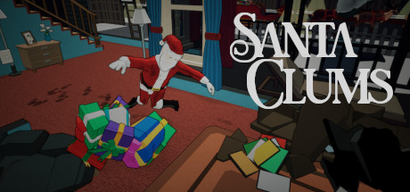
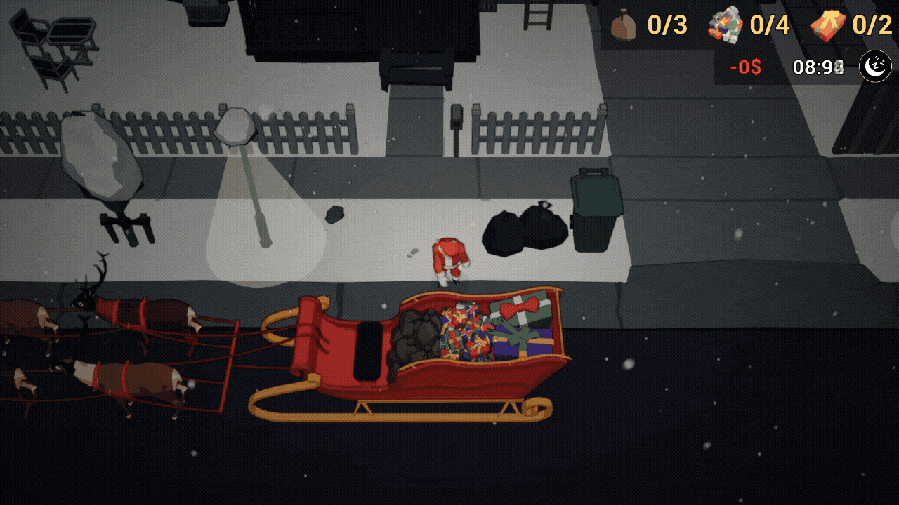
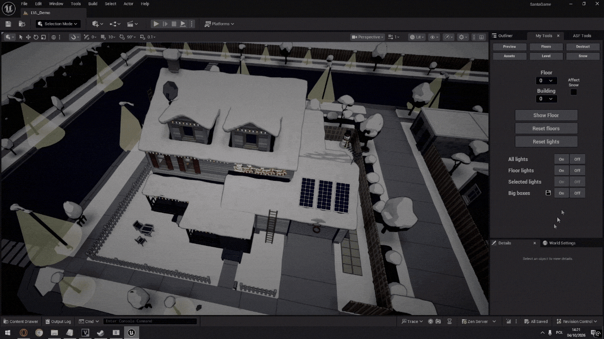

Santa Clums is currently in development and has not yet been published on any platform.
Santa Clums
Santa Clums is a 3D top-down action/puzzle game developed from the ground up in Unreal Engine 5. Players take on the role of a particularly clumsy Santa Claus, whose clumsiness significantly affects the controls.
The core gameplay loop involves finding an optimal way into a building and delivering different types of gifts while avoiding detection by NPCs. Players must also avoid accidentally damaging furniture, which incurs score penalties and alerts residents. Planned leaderboards will let players compete for the fastest completion times and highest scores.
Features I am most proud of
Carrying and Balance
- Implemented a system for interacting with, picking up, and carrying objects with different constraints and properties.
- Implemented procedural animation using Control Rig to handle complex character movement when carrying heavy items.
- Implemented a balancing minigame to make carrying heavy items more interesting.
- Created a complex gameplay and animation state machine to smoothly transition between various states, such as uninterruptible animations and ragdolls.

Destruction
- Implemented a system for destroying furniture either by player collision, thrown items or player actions.
- Created hundreds of unique geometry collections to ensure destructible object variety.
- Optimized performance by limiting the total number of fragments, with a queue that removes the oldest fragments above the limit.

Dynamic Climbing
- Implemented a system that allows climbing on any valid edge without requiring any level design work.
- Implemented vaulting through fences and windows, as well as climbing ladders and valid wall decorations.
- Developed an animation system that selects a valid animation for the required action, with different animations for pulling the character up from various heights and support for Root Motion and Motion Warping.

Responsive AI
- Implemented an AI system based on State Machines and Behaviour Trees.
- Implemented a system on top of UE5 AI Senses that allows NPCs to detect and react to the player.
- Configured various AI types and behaviours, allowing NPCs to perform different passive activities, search for and chase the player, and enter different states, such as ragdoll, depending on player actions.
- Implemented a spline-based vehicle driving system for NPCs arriving from outside the map.

Advanced Tooling
- Created a set of tools to enable and speed up development across various areas of the project.
- Created tools for building and navigating levels by showing and hiding specific buildings and floors, and manipulating lights.
- Created tools to simplify system configuration, such as assigning objects to floors and configuring destructibles.
- Created tools to speed up the asset production pipeline by enabling bulk replacement of meshes, materials, and actors.
- Created a custom snow generation tool that can cover the entire level with snow, dynamically adjusting to the level surface using UE5 Generated Dynamic Mesh Actor.
